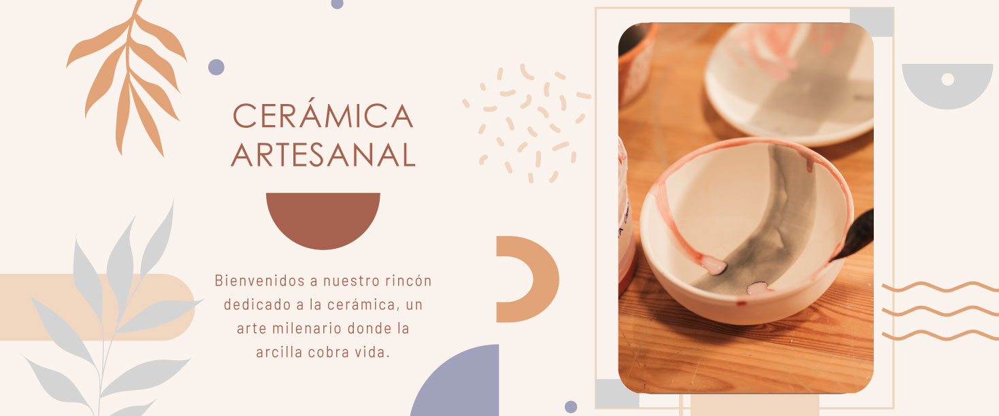

Este sitio web utiliza cookies para mejorar su experiencia de navegación. Al continuar navegando, usted acepta el uso de cookies.

Céramica mas completa
Si la cerámica ha acompañado la historia de la humanidad desde tiempos de la Prehistoria, ciertamente hay un motivo. Material flexible y manejable, representa tanto la materia prima para crear innumerables objetos de diversa utilidad como una forma de expresión artística. Aunque la palabra cerámica deriva del griego keramos, su invención se remonta a tiempos aún más antiguos. Hace mucho tiempo, quizás por casualidad, los hombres notaron que tierra muy compacta, si se calentaba con fuego, se solidificaba. A partir de ese momento, el hombre ha trabajado mucho y ha comenzado a modelar las arcillas, experimentando con técnicas cada vez más avanzadas para obtener mejores resultados.
Información detallada
La palabra «cerámica», del griego «kéramos» que se traduce literalmente como «arte de trabajar la arcilla», tiene un doble significado. Por un lado indica un material inorgánico, no metálico, muy dúctil en su estado natural y rígido tras la fase de cocción. Por otro lado, identifica el propio producto obtenido con el material consolidado con los procesos de cocción.
Productos
Nosotros
La cerámica artesanal, a medida y única.
Las cerámicas artesanales son hechas a mano por nsootros a partir de la fase de elaboración, que comienza con la elección del tipo de arcilla y de la técnica a utilizar para el modelado, hasta el final de la decoración. Las cerámicas realizadas a mano suelen ser piezas únicas, difíciles de reproducir y exclusivas.
Que tus momentos y espacios tengan la nobleza y el amor de lo hecho a mano